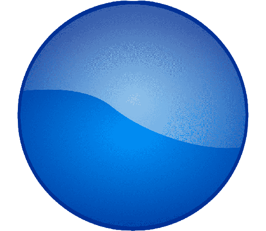
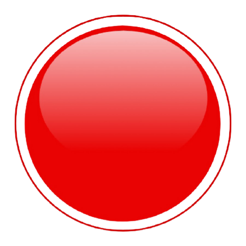
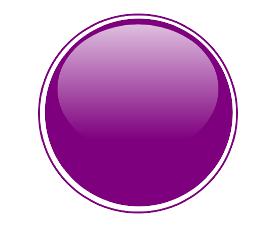

Navy blue — насыщенный темно-синий Sapphire — сапфировый Ultramarine — ультрамариновый Голубой цвет. Turquoise — бирюзовый Azure — лазурный Aquamarine — цвет морской волны Фиолетовый цвет. Lilac — сиреневый Purple — пурпурный Lavender — лавандовый Белый цвет. Ivory — цвет слоновой кости Eggshell — цвет яичной скорлупы Snowy — белоснежный Серый цвет.
Из основных оттенков красного цвета можно выделить следующие: Ализариновый Алый Багровый Багряный Бордо Кардинал Кармин Розовый Вот как выглядят различные оттенки красного цвета. Для каждого оттенка указан его номер. Оттенков красного очень много, все их названия нет смысла перечислять - один и тот же цвет могут называть по-разному. Самые популярные оттенки красного цвета - это, конечно же, алый, розовый
Пурпурный цвет – характеризует экстравагантность, необычность на грани странности, артистизм. Это цвет чудаков и людей, которые предпочитают изменчивость ради изменчивости.
